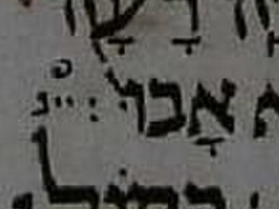
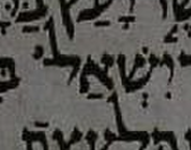
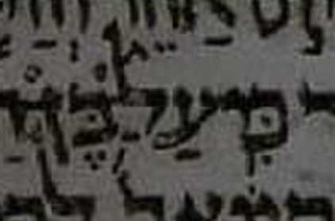
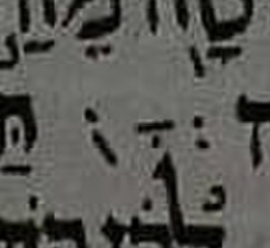
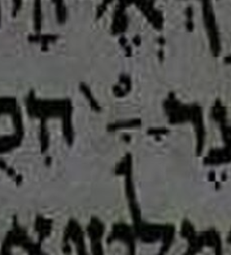
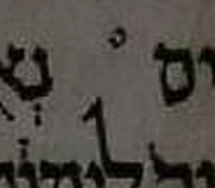
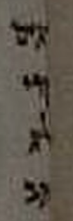
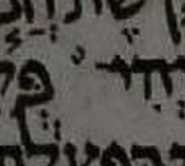
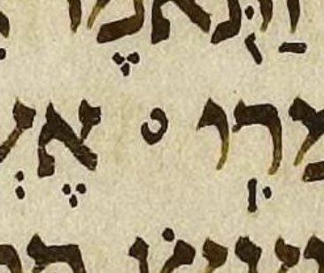
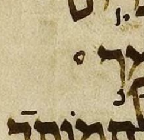

Features of interest · Interesting ketiv/qere cases · NAEE book links
Every case of קרי ולא כתיב discussed here has the expected marginal note containing the qere letters. Also as expected, neither qere nor ketiv letters are present in the body text. The cases differ in whether, in the body text:
(By definition, when niqqud marks are present, these are "orphan" niqqud, i.e. letterless niqqud.)
For each case of קרי ולא כתיב, we show the following:
We present the MAM notes not only in their original Hebrew but also in English translation. This translation also makes the original notes' abbreviated wording more explicit. Sometimes it is not clear what a note means when it says, for example "=ל-קרי". We translate that as "MAM's qere agrees with the qere implied by the Leningrad Codex." But it is important to note that by "agrees" here we don't mean "equals" so much as "is consistent with". I.e. what we mean is "MAM's qere is consistent with the qere implied by the [body niqqud (if any) and marginal qere letters of the] Leningrad Codex."
The encoding retains each קרי ולא כתיב call and its qere, and supplements that call with one additional template describing the body text. The additional template records which niqqud, if any, are present and whether horizontal space is present. The cases below require three kinds of additional template:
The phrase “space above the marks” means horizontal space in the line of letters, left between words or at the end of a manuscript line. At a line ending, that horizontal space may have been left on purpose or may be accidental. The end-of-line cases here are Judges 20:13 and Ruth 3:17. None of the cases discussed here is at the start of a manuscript line.
The existing niqqud templates are specific to near-Aleppo. Their payloads use artificial carrier letters to hold the marks; those carriers are not written manuscript letters. The carrier can be alef, vav, or, rarely, dalet. At 2 Kings 19:31, an artificial vav carries the orphan ḥolam dot.
Current status: every site below uses the קרי ולא כתיב template. Each implemented additional template immediately precedes that unchanged call, with no intervening separator. The example edition displays the body marks or blank space below the qere in the same box. The box and artificial carriers are editorial display conventions; their widths do not measure manuscript spacing.
| Verse | N | H | Pos. |
|---|---|---|---|
| Judges 20:13 | + | + | EOL |
| 2 Samuel 16:23 | − | + | BW |
| 2 Samuel 18:20 | + | − | BW |
| 2 Kings 19:31 | + | + | BW |
| 2 Kings 19:37 | + | + | BW |
| Jeremiah 31:37 | − | + | BW |
| Jeremiah 50:29 | − | + | BW |
| Ruth 3:5 | − | + | BW |
| Ruth 3:17 | − | + | EOL |
The "N" column records whether any niqqud are present in the body text. The "H" column records whether horizontal space is present in the line of letters, with or without niqqud in or under that space. A plus sign (+) means present, and a minus sign (−) means absent. The "Pos." column records position: BW means between written words, and EOL means at the end of a manuscript line.

This Aleppo Codex image shows the body text at Judges 20:13.
Current encoding — implemented: The dataset uses קרי ולא כתיב.
Additional template — implemented: The additional template is ניקוד בלי אות. The additional template records sheva, tsere, and munaḥ, with no dagesh, and horizontal space above these marks.
… אָבוּ֙ «אְאֵ֣» בִנְיָמִ֔ן …
MAM has no doc-note attached to this qere-without-ketiv site.
The below-marks of בְּנֵ֣י (sheva, tsere, munaḥ) are present without letters, with space above them. There is no dagesh for this qere in the body text, as expected, since dagesh marks are never included in cases of qere without ketiv. The orphan marks are at the end of a manuscript line. The line ending provided space for the marks, possibly accidentally.

This Aleppo Codex image shows the body text at 2 Samuel 16:23.
Current encoding — implemented: The dataset uses קרי ולא כתיב.
Additional template — implemented: The additional template is רווח בלי ניקוד. The additional template records horizontal space without niqqud. Available space does not supply missing marks.
… כַּאֲשֶׁ֥ר יִשְׁאַל־ בִּדְבַ֣ר …
There is only a narrow space, and no pointing for אִ֖ישׁ, which is read but not written.
The below-marks of איש (ḥiriq and tipeḥa) could have easily fit underneath the maqaf and/or the space after it, but the naqdan declined to provide those below-marks. MAM's description of the space as “narrow” is slightly puzzling, unless we take "narrow" to refer to the space that would be needed for the (implied) letters rather than the smaller space needed to fit the below-marks.

This Aleppo Codex image shows the body text at 2 Samuel 18:20.
Current encoding — implemented: The dataset uses קרי ולא כתיב.
Additional template — implemented: The additional template is ניקוד בלי אות ובלי רווח. The additional template records tsere and merkha, with no dagesh or horizontal space above the marks. The explicit orphan-marks-alef variant uses an artificial alef carrying both marks.
… תְבַשֵּׂ֔ר כִּֽי־עַל־«אֵ֥» בֶּן־הַמֶּ֖לֶךְ …
In the Aleppo Codex, there is no space for כֵּ֥ן, which is read but not written, but the tsere and merkha are written below, between the surrounding written atoms (not the dagesh, as expected).

This Aleppo Codex image shows the body text at 2 Kings 19:31.
Current encoding — implemented: The dataset uses קרי ולא כתיב.
Additional template — implemented: The additional template is ניקוד בלי אות. The additional template records sheva, qamats, tipeḥa, and an orphan ḥolam dot, with horizontal space above the marks. Three artificial alefs carry the below-marks, followed by an artificial vav carrying the ḥolam dot.
… יְהוָ֥ה «אְאָא֖וֹ» תַּעֲשֶׂה־זֹּֽאת׃
MAM has no doc-note attached to this qere-without-ketiv site.
The gap here is generous compared with the manuscript's usual small or nonexistent spaces between atoms, so it is pretty clear that the letter-scribe intended to leave a large gap, perhaps even one large enough to fit the (implied) qere letters. All the below-marks of צְבָא֖וֹת are present (sheva, qamats, and tipeḥa). An orphan ḥolam dot is also present.

This Aleppo Codex image shows the body text at 2 Kings 19:37.
Current encoding — implemented: The dataset uses קרי ולא כתיב.
Additional template — implemented: The additional template is ניקוד בלי אות. The additional template records two qamats marks and pashta, with horizontal space above the marks.
… וְשַׂרְאֶ֤צֶר «אָאָא֙» הִכֻּ֣הוּ …
MAM has no doc-note attached to this qere-without-ketiv site.
The marks of בָּנָיו֙ (qamats, qamats, pashta) are present without letters, with space above them. The marks occupy a large horizontal space between the surrounding written atoms, presumably left intentionally by the letter-scribe.

This Aleppo Codex image shows the body text at Jeremiah 31:37.

This Aleppo Codex image shows the marginal qere note at Jeremiah 31:37.
Current encoding — implemented: The dataset uses קרי ולא כתיב.
Additional template — implemented: The additional template is רווח בלי ניקוד. The additional template records the generous horizontal space without niqqud.
… יָמִ֥ים נְאֻם־יְהוָ֑ה …
MAM agrees with the qere implied by all of the following: the Leningrad Codex, the Cairo Codex of the Prophets, and the printed tradition.
The Aleppo Codex has the following body text:
הִנֵּ֛ה יָמִ֥ים [] יְהֹוָֽה
[sic, missing נְאֻם־ in MAM's illustration]
Pointing is not present in the space intended for "qere without ketiv".
Breuer's note.
Koren, Breuer, the Simanim Tanakh, and Mechon Mamre.
The horizontal space between the surrounding written atoms is rather generous.
The damage to the marginal qere note looks as if opaque tape had been laid parallel to the right margin, obscuring approximately the first letter of each inferred word on its own line. The cause of the damage is unknown. The tape comparison describes how the damage looks; it does not propose a mechanism.
The marginal qere note is inferred to have one word per line:

This Aleppo Codex image shows the body text at Jeremiah 50:29.
Current encoding — implemented: The dataset uses קרי ולא כתיב.
Additional template — implemented: The additional template is רווח בלי ניקוד. The additional template records the generous horizontal space without niqqud. The preceding maqaf extends into the space.
… סָבִ֗יב אַל־יְהִי־ פְּלֵיטָ֔ה …
The Aleppo Codex has the following pointed ketiv, i.e. the following body text:
אַל־יְהִי־[֯] פְּלֵיטָ֔ה
There is an empty space without vowel points or cantillation marks, with a masorah circle above.
The horizontal space between the surrounding written atoms is generous. The preceding maqaf extends into that space.

This Aleppo Codex image shows the body text at Ruth 3:5.
Current encoding — implemented: The dataset uses קרי ולא כתיב.
Additional template — implemented: The additional template is רווח בלי ניקוד. The additional template records the generous horizontal space without niqqud.
… אֲשֶׁר־תֹּאמְרִ֥י אֶעֱשֶֽׂה׃
MAM's qere agrees with the qere implied by the Leningrad Codex.
In the Aleppo Codex there is a noticeable space containing a masorah circle referring to the marginal note "אלי קרי", but the vowel points and cantillation marks for the qere, which is read but not written, are not present.

This Aleppo Codex image shows the body text at Ruth 3:17.
Current encoding — implemented: The dataset uses קרי ולא כתיב.
Additional template — implemented: The additional template is רווח בלי ניקוד. The additional template records the generous horizontal space at the end of the manuscript line, without niqqud.
… אָמַ֣ר אַל־תָּב֥וֹאִי …
MAM's qere agrees with the qere implied by the Leningrad Codex.
In the Aleppo Codex there is a noticeable space containing a masorah circle referring to the marginal note "אלי קרי ולא כתב", but the vowel points and cantillation marks for the qere, which is read but not written, are not present.
The space is at the end of a manuscript line. The line ending may account for the generous space, possibly accidentally.